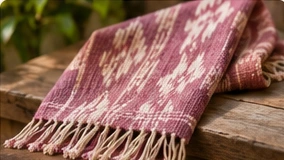
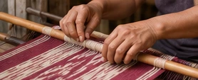

Made by hand. Rooted in culture.
Local hands.
Local hands.
Lasting stories.
Discover Filipino crafts and the people who make them. Find beauty in the details, and a story in every piece.
 Thoughtfully made, locally loved.
Thoughtfully made, locally loved.
The craft collection
Everyday pieces.
View all crafts
Everyday pieces.
Extraordinary hands.
People behind the pieces
Behind every craft
Behind every craft
is a maker.
Meet the people, explore their process, and discover the stories woven into their work.
Discover their stories
Discover with intention
Browse by craft and find pieces that speak to you.
Get to know the maker
See the people and process behind the work.
Start a conversation
Ask about a piece, its materials, or the story behind it.
A student concept celebrating Filipino craftsmanship. All current
listings and maker profiles are illustrative.